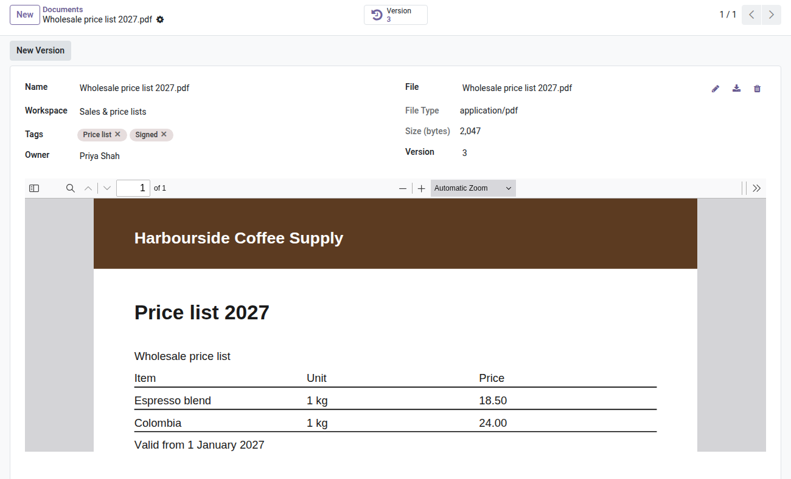
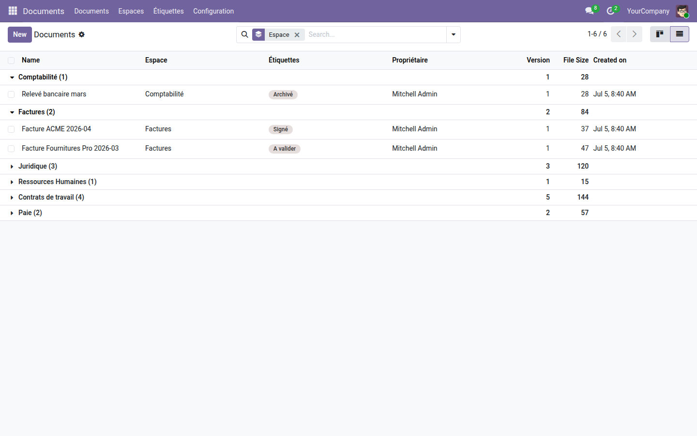

Organize all your files in isolated workspaces: versioning, preview, links to business records and per-workspace access rights — right inside Odoo Community.
On Odoo Community, documents live scattered as attachments buried in records, with no filing, no version history, no control over who sees what. Finding the right contract, knowing which is the latest version, keeping one department out of another's files: none of this exists natively. Odoo Enterprise's DMS (Documents) fills that gap — this app brings it to your Community.
ir.attachment) and carries its metadata: workspace, tags, owner, type, size.Isolated, hierarchical workspaces — a clear tree, a document counter per workspace.

The document, all in one — file preview, tags, version, owner and link to the business record.

Everything can be found — overview grouped by workspace, with search by type, tag and owner.

This DMS is the free foundation of a suite under construction: electronic signature, customer upload through the portal and per-workspace actions will plug into it. Install it now, it will grow.
Free app, LGPL-3 license — compatible with Odoo 19.0 Community & Enterprise. No external dependency. Support: apps@odooskills.com.